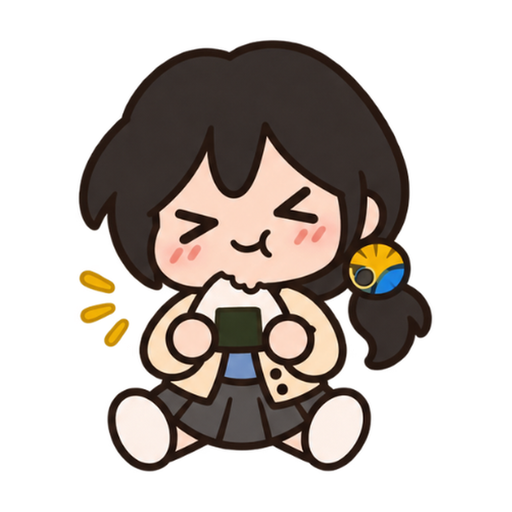
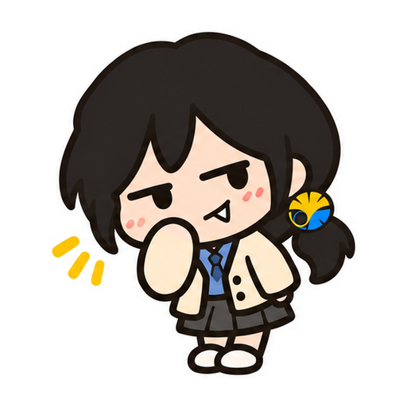

CHARACTER FILE · 角色介绍
✓ 真实存在的人物
东小杏
Dong Xiaoxing · 東小杏
你好，我叫东小杏！
女
情报理工学系研究科
喜欢薯饼 & 抹茶
本乡校区出没
FILE 01
基本档案
性别
女
存在确认
真实存在的人物
所属
东京大学 情报理工学系研究科
导师
门本淳一郎（門本 淳一郎）
常出没地
工学部 2 号馆 / 理学部 1 号馆 / 中央食堂
名字由来
「东」取自东大，「杏」取自银杏发卡
喜欢的食物
薯饼 · 抹茶
出身
不明
过往经历
不明
身高 / 体重
打听女孩子的这类信息是很不礼貌的！
FILE 02
第一目击记录
FIELD SIGHTING REPORT · HONGO CAMPUS
「据第一目击者——也就是本漫画的执笔者（同为情报理工学系研究科的石佚同学）所说，东小杏是有一天在本乡校区的银杏树底下捡到的。」
补充记录：东小杏在计算机科学领域十分天才，仅用一天就通关了东京大学工学序列中难度最大的情报理工研究科的入试。
FILE 03
性格图鉴
元气甜妹
爱笑，见到熟人就会远远挥着团子手跑过来打招呼。

慷慨大方
东小杏十分慷慨，经常会给研究室的同学买点心吃。

嘻嘻哈哈 · 偶尔有点坏
憋着鬼主意时会捂嘴偷笑，嘴角悄悄露出一颗小虎牙。
骄傲自负
实验或时序跑通时嘴角压不住，还要努力装作意料之中。

研究时很严肃
探头一碰到 FPGA 板子就安静下来，盯着波形一拍一拍地查。

熬夜嘴硬
嘴上说「我昨天真的很早就睡了」，头顶的小尖角已经出卖了她。
FILE 04
外形与穿搭偏好

银杏三瓣刘海 & 耳下双银杏发卡
黑发低侧马尾、额前两道 V 形分叉的银杏三瓣刘海；耳下马尾根部夹着无白底东大黄蓝双银杏（黄 4 瓣、蓝 2 瓣），配黑圆点眼、粉腮红与一颗小虎牙。
状态开关 · 熬夜尖角
平时头顶圆润光滑，只有没睡好时才会冒出粉白条纹小尖角；认真讨论或看论文时会戴上暖棕色细框圆眼镜。
常见穿搭
日常穿奶油色开衫外套 + 蓝衬衫蓝领带 + 深灰百褶短裙；正式场合换深蓝小西装；秋季外出常穿浅蓝色牛角扣外套配斜挎小包。
钟爱各式裙装
东小杏喜欢穿各种各样的裙子，无论是经典的深灰百褶短裙，还是随季节与心情换上的不同款式裙装，总能穿出轻快元气的日常感。
原创声明 · Original Creation Notice
「东小杏（東小杏 / Dong Xiaoxing）」的角色构思、人设档案、外形设定、四格漫画与相关表情包均由 石佚（Yi Shi / 11_sum，GitHub: @Elevenvenven）本人原创并保留所有权利。未经作者许可，禁止用于商业用途、擅自二次分发或冒名使用；个人非商业分享请注明原作者与出处。